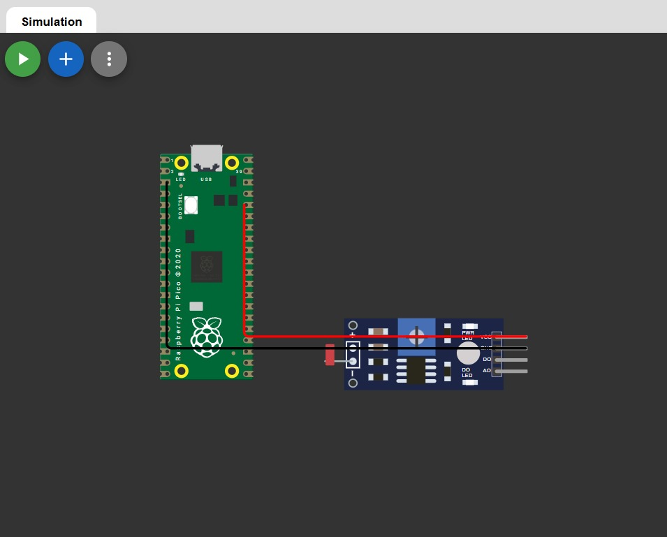
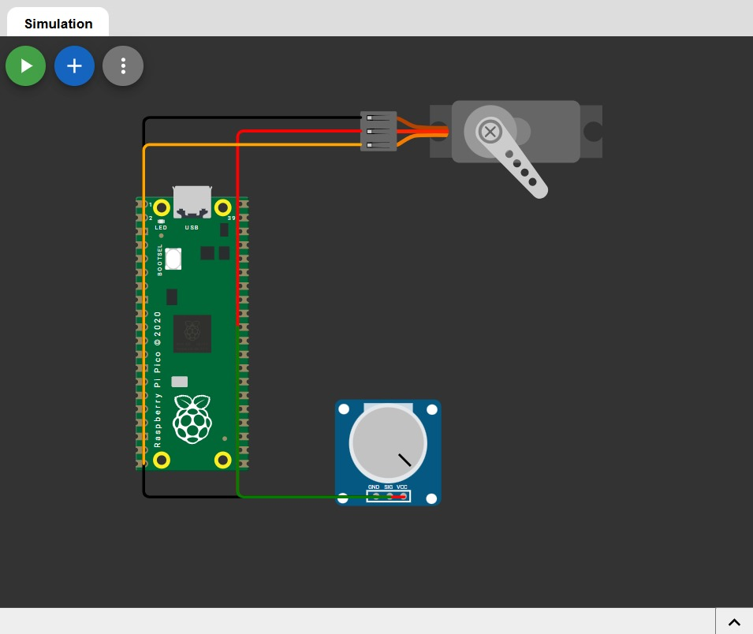

Tarea 9.1
ADC
ADC son las siglas de Convertidor Analógico-Digital (Analog-to-Digital Converter) en electrónica, un circuito que transforma una señal analógica del mundo real (como el sonido o la temperatura) en datos digitales que las computadoras pueden procesar.
Transforma señales continuas (analógicas) en valores discretos (digitales).Lo cual es esencial para la mayoría de los sistemas modernos, ya que les permite interpretar y procesar datos del mundo real, que es inherentemente analógico.
ADC Luxometro
Crear un codigo que me marca la luminosidad de 0-100% usando un LDR.
Código
const int ldrPin = 26;
void setup() {
Serial.begin(115200);
}
void loop() {
int val = analogRead(ldrPin);
int percent = map(val, 0, 4095, 0, 100);
Serial.print("Luminosidad: ");
Serial.print(percent);
Serial.println("%");
delay(500);
}

Tarea 9.2
Servo con ADC
Crear un codigo para mover un servo usando un potenciometro y un adc que vaya 0-180 grados.
#include <Servo.h>
Servo servo;
const int potPin = 26;
const int servoPin = 15;
void setup() {
servo.attach(servoPin);
}
void loop() {
int val = analogRead(potPin);
int angle = map(val, 0, 4095, 0, 180);
servo.write(angle);
delay(10);
}
